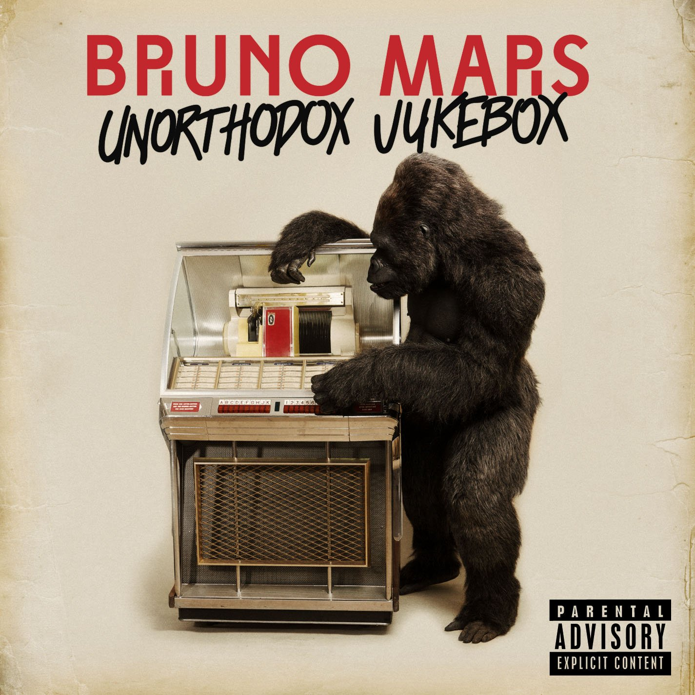

Artist profile
Bruno Mars
Bruno Mars (real name Peter Gene Hernandez) is an American singer, songwriter, and producer from Honolulu, Hawaii. He is known for pop, funk, and R&B hits like “Uptown Funk” and “Just the Way You Are,” and for his high-energy live performances.
Listen and explore
Albums
Choose a preview below
-
.jpg) Doo-Wops & Hooligans
Just the Way You Are
Doo-Wops & Hooligans
Just the Way You Are
-

Unorthodox Jukebox Locked Out of Heaven